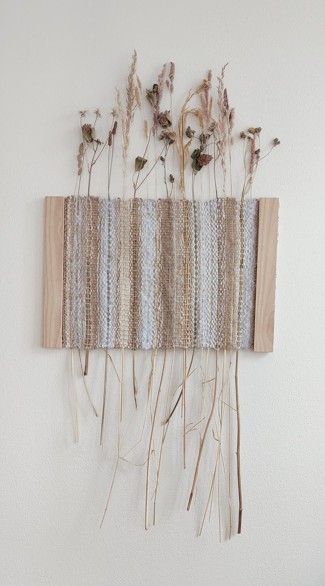

Kariko Tapisérie
Jedinečné tkaní vyrobené z vlastnoručně nasbíraných divokých květin a trav z místních luk, polí a lesů. Každý kus je pečlivě navržen a láskyplně vyroben tak, aby odrážel přirozené rostoucí tvary a barevná schémata přírody. Tyto naturalistické umělecké kousky přinášejí přírodu zpět do našich domovů.
Tapisérie Louka
- 
Sbírám místní květiny z naší louky, abych je ručně vetkala do tapisérie, která vydrží věčně. Vždy se snažím pocit daný přírodními rostlinami harmonizovat a zvěčnit je co nejpřirozeněji. Každý kus je jedinečný svými rostlinami, barvami a designem.